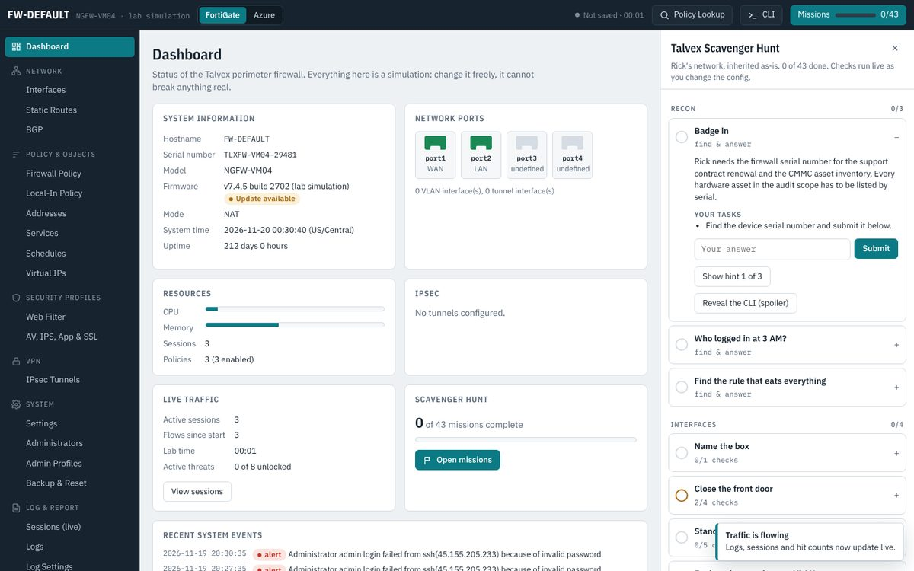
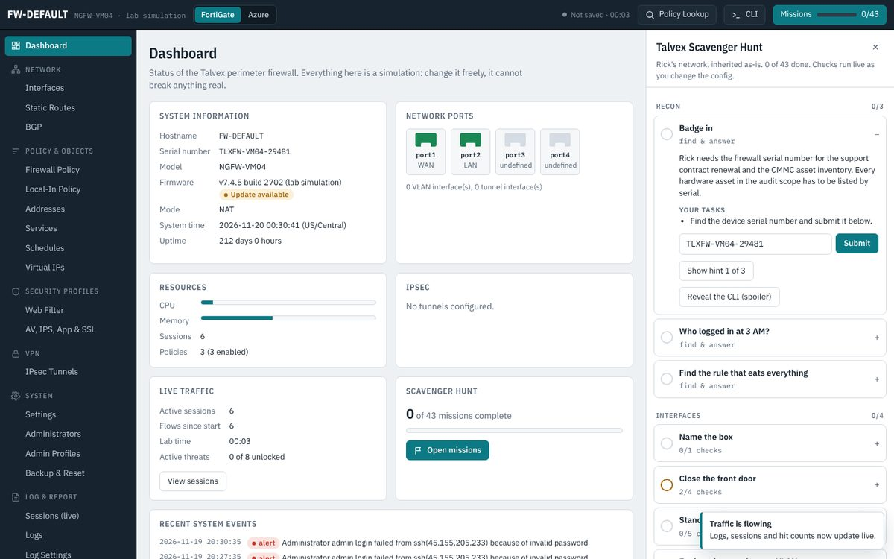
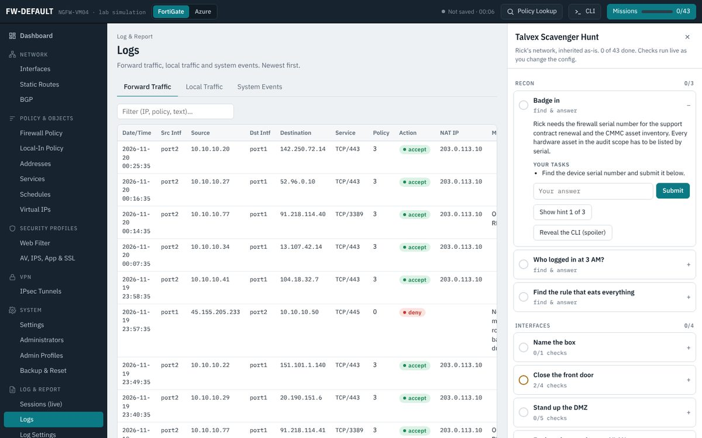
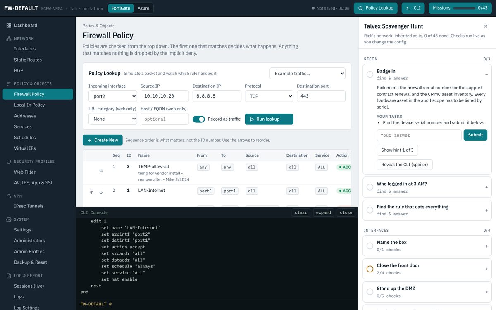
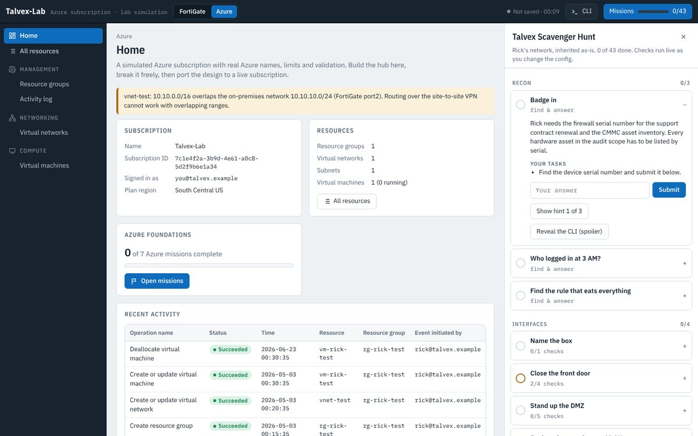

Talvex Firewall Lab · 2-minute tour
What the lab is, in five screens
I built this firewall and Azure simulator to work out configurations safely before I make them on live client systems. The public version is a 43-mission training lab with a fictional company. If you don't have an hour to play it, these five screens show what it does.

You inherit a messy firewall
The story: you take over a perimeter firewall the previous IT person left behind. The dashboard shows the box as it is, including failed admin logins from the internet already hitting it.

43 missions guide the work
Missions go from recon (find the serial number for the CMMC asset inventory) to hardening, VLANs, a DMZ, web filtering and admin lockdown. Each one checks the live configuration as you work, with hints if you get stuck.

Live traffic and live attackers
The logs update in real time, and new threats unlock as you progress. Here they show a blocked file-sharing (SMB) attempt from the internet, and remote-desktop traffic heading out that deserves a closer look.

Rules, Policy Lookup and a real CLI
A leftover "TEMP-allow-all" rule sits at the top of the list, a common real-world problem. Policy Lookup shows which rule would handle any packet, and the command-line console edits the same configuration as text, the way you would on a real firewall.

The Azure side
A switch at the top flips to a simulated Azure subscription that uses real Azure names and checks. You build a site-to-site VPN into Azure, and it catches mistakes like an address range that overlaps the office network, which would break the tunnel.
Ready to try it? It runs in your browser and takes about 60 to 75 minutes. Nothing is saved.
Play the labIndependent training simulation, not affiliated with or endorsed by Fortinet. Talvex is a fictional company and all data is made up.